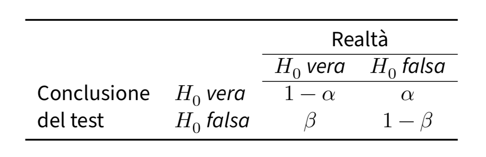

50. Significatività statistica#
import numpy as np
import scipy.stats as st
Una regola decisionale comunemente usata, ma che la comunità statistica fortemente sconsiglia, è quella di considerare un risultato sperimentale come stabile o reale se è “statisticamente significativo” e di considerare i risultati “non significativi” come rumorosi e da trattare con scetticismo. Per i motivi discussi in seguito, è preferibile non concentrarsi sulla significatività statistica, ma il concetto è abbastanza importante nella statistica applicata da meritare di essere approfondito qui. Qui ci concentreremo nuovamente sul caso relativo alla media del campione usata quale stimatore della media della popolazione.
50.1. Standardizzazione della media campionaria#
In precedenza abbiamo esaminato la costruzione della distribuzione campionaria di una statistica di test. Ad esempio, consideriamo la media campionaria come stima della media della popolazione. Nel caso semplice in cui la popolazione segue una distribuzione normale, la distribuzione campionaria della statistica \(\bar{X}\) sarà distribuita secondo una distribuzione normale con media \(\mu\) e deviazione standard \(\sigma/\sqrt{n}\), dove \(\sigma\) è la deviazione standard della popolazione e \(n\) è la dimensione del campione.
Supponiamo per semplicità che la deviazione standard \(\sigma\) sia nota. Nonostante questa conoscenza, il parametro \(\mu\) rimane sconosciuto. La procedura di test di ipotesi statistiche si basa su un “Gedankenexperiment”, dove si ipotizza che la media sconosciuta \(\mu\) della popolazione assuma il valore noto \(\mu_0\). Costruendo la distribuzione campionaria di \(\bar{X}\) sulla base di questa ipotesi, ci chiediamo quanto “lontana” si trovi \(\bar{X}\) dal valore atteso sotto l’ipotesi \(\mu_0\). In altre parole, cerchiamo di valutare quanto \(\bar{X}\) si discosti da \(\mu_0\), poiché sappiamo che l’aspettazione di \(\bar{X}\) è uguale a \(\mu\).
Al fine di quantificare la “distanza” tra la media campionaria \(\bar{X}\) e \(\mu_0\), il framework frequentista utilizza la standardizzazione di \(\bar{X}\) all’interno della distribuzione campionaria costruita assumendo \(\mu = \mu_0\). Questo processo coinvolge la creazione di una variabile detta \(Z\), definita come:
Questa standardizzazione permette di ottenere una variabile normale standardizzata \(Z\), con media 0 e deviazione standard 1, rappresentata come \(Z \sim \mathcal{N}(0, 1)\).
Consideriamo il fatto che questo sia un “Gedankenexperiment”. La “distanza” tra \(\bar{X}\) e \(\mu_0\) viene interpretata come segue: se \(Z\) è piccolo, indicando che \(\bar{X}\) è simile a \(\mu_0\), allora i dati empirici del campione osservato sono coerenti con l’ipotesi \(\mu = \mu_0\). Al contrario, se \(Z\) è grande, indicando che \(\bar{X}\) è “significativamente distante” da \(\mu_0\), i dati empirici del campione osservato risultano incompatibili con l’ipotesi \(\mu = \mu_0\). Di conseguenza, l’ipotesi \(\mu = \mu_0\) viene ritenuta poco plausibile e viene respinta.
Per determinare la soglia oltre la quale l’ipotesi \(\mu = \mu_0\) viene rigettata, utilizziamo il seguente criterio. Identifichiamo un insieme di valori possibili di \(\bar{X}\) che, all’interno della distribuzione campionaria di \(\bar{X}\) costruita assumendo \(\mu = \mu_0\), sono molto distanti da \(\mathbb{E}(\bar{X}) = \mu_0\). Decidiamo che i valori che portano al rigetto dell’ipotesi \(\mu = \mu_0\) corrispondano al 5% dei valori di \(\bar{X}\) più estremi. Pertanto, determiniamo i valori \(z_c\) che lasciano un’area pari a 0.05/2 in ciascuna coda della distribuzione \(Z\). Questi valori corrispondono a -1.96 e 1.96. Se la statistica di test \(Z\) assume un valore inferiore a -1.96 o superiore a 1.96, concludiamo il “Gedankenexperiment” affermando che la distanza tra \(\bar{X}\) e \(\mu_0\) è così “significativa” che l’ipotesi \(\mu = \mu_0\) non può essere ritenuta plausibile. Di conseguenza, respingiamo l’ipotesi \(\mu = \mu_0\) e accettiamo l’ipotesi alternativa \(\mu \neq \mu_0\).
Nel contesto frequentista, l’ipotesi \(\mu = \mu_0\) è definita come “ipotesi nulla” e viene indicata con \(H_0\). Il valore \(z_c\) rappresenta il “valore critico per il rigetto dell’ipotesi nulla”, mentre il valore del 5% viene chiamato “livello di significatività” e viene denotato come \(\alpha\). Di solito, il valore di \(\alpha\) è impostato a 0.05, ma può anche assumere valori come 0.01 o 0.001.
50.2. Applicazioni pratiche#
Nella precedente discussione, abbiamo supposto che \(\sigma\) fosse nota. Tuttavia, poiché di solito non conosciamo il valore di \(\sigma\) nella pratica, dobbiamo stimarlo utilizzando la deviazione standard campionaria \(s\). Pertanto, al posto di \(\sigma\), possiamo utilizzare \(s\), ottenendo così la statistica:
Si può dimostrare che la statistica \(T\) segue una distribuzione \(t\) di Student con \(n-1\) gradi di libertà se il campione casuale è stato estratto da una popolazione normale.
A questo punto, possiamo applicare la stessa logica descritta in precedenza basandoci sulla statistica \(T\) per testare un’ipotesi sulla media della popolazione. Utilizzando il valore critico appropriato dalla distribuzione \(t\) di Student con \(n-1\) gradi di libertà e un livello di significatività predefinito, possiamo determinare se i dati osservati supportano o respingono l’ipotesi nulla sulla media della popolazione.
50.3. Ipotesi statistiche#
Esaminiamo in maggior dettaglio la procedura di test di ipotesi statistiche nel contesto frequentista. Definiamo innanzitutto l’ipotesi statistica come una dichiarazione riguardante la distribuzione di probabilità di una variabile casuale. Tale ipotesi può riguardare la forma funzionale della distribuzione o i parametri che la caratterizzano.
In particolare, l’ipotesi che riguarda i parametri di una o più popolazioni viene denominata ipotesi nulla e viene rappresentata come \(H_0\). Per un parametro sconosciuto \(\theta\), l’ipotesi nulla viene formulata come:
dove \(\Theta_0\) è un sottoinsieme del dominio \(\Theta\), che rappresenta tutti i possibili valori del parametro \(\theta\) coerenti con il modello statistico adottato. L’ipotesi nulla può essere semplice se \(\Theta_0\) contiene un unico elemento, oppure composta se contiene più di un elemento.
50.4. I passi di un test di ipotesi#
Per prendere una decisione tra accettare o respingere l’ipotesi nulla, i frequentisti utilizzano un test statistico. Un test statistico frequentista ci permette di valutare se i dati osservati forniscono prove sufficienti per respingere o accettare un’ipotesi riguardante la distribuzione di una popolazione di interesse e si può descrivere nel modo seguente.
Iniziamo formulando l’ipotesi nulla \(H_0\), che rappresenta un’affermazione specifica sulla popolazione. L’ipotesi alternativa \(H_1\) viene formulata come un’alternativa all’ipotesi nulla. Successivamente, definiamo una statistica campionaria \(\mathcal{G}_n(X_1, \dots, X_n)\) che viene calcolata a partire dai dati campionari e che ha una distribuzione nota quando l’ipotesi nulla è vera.
Successivamente, suddividiamo l’insieme di tutte le possibili realizzazioni della statistica \(\mathcal{G}_n\) in due insiemi disgiunti: la “regione di accettazione” \(\mathcal{A}\) e la sua regione complementare, la “regione di rifiuto” \(\mathcal{R}\). La regione di accettazione rappresenta l’insieme dei valori che la statistica può assumere sotto l’ipotesi nulla, mentre la regione di rifiuto rappresenta l’insieme dei valori che la statistica può assumere se l’ipotesi nulla è falsa.
Infine, selezioniamo un livello di significatività \(\alpha\), che rappresenta la massima probabilità di respingere erroneamente l’ipotesi nulla quando questa è vera. Se l’osservazione della statistica \(\mathcal{G}_n\) rientra nella regione di accettazione, allora l’ipotesi nulla viene accettata; altrimenti, viene respinta a favore dell’ipotesi alternativa.
In sintesi, il test statistico ci consente di stabilire se i dati osservati forniscono sufficienti evidenze per rifiutare l’ipotesi nulla a favore dell’ipotesi alternativa.
50.5. Ipotesi alternativa#
Durante un test di ipotesi, dopo aver definito l’ipotesi nulla \(H_0\), vengono considerate diverse ipotesi alternative \(H_1\). Le ipotesi alternative più comuni si suddividono in tre tipi: 1) \(H_1: \theta \neq \theta_0\), 2) \(H_1: \theta > \theta_0\), e 3) \(H_1: \theta < \theta_0\). Queste corrispondono rispettivamente a un test bidirezionale, un test unilaterale superiore (o destro) e un test unilaterale inferiore (o sinistro).
La scelta dell’ipotesi alternativa influisce sulla definizione della regione di rifiuto \(\mathcal{R}\) dell’ipotesi nulla \(H_0\). La regione di rifiuto rappresenta i valori estremi della distribuzione, in direzione dell’ipotesi alternativa \(H_1\). Nel caso di un test unilaterale inferiore, \(\mathcal{R}\) si trova nella coda sinistra della distribuzione, nell’intervallo [\(-\infty\), \(\theta_0\)]. Nel caso di un test unilaterale superiore, \(\mathcal{R}\) si trova nella coda destra della distribuzione, nell’intervallo [\(\theta_0\), \(\infty\)].
I valori critici sono i valori che delimitano la regione di rifiuto \(\mathcal{R}\) in un test unilaterale e i valori che delimitano le regioni di rifiuto \(\mathcal{R}\) in un test bidirezionale. Il risultato di un test viene considerato statisticamente significativo se il valore della statistica del test si trova nella regione di rifiuto \(\mathcal{R}\).
50.6. Valore-p#
Il valore-p è definito come la probabilità che la statistica del test assuma un valore uguale o più estremo di quello osservato, considerando la distribuzione campionaria costruita assumendo come vera l’ipotesi nulla. La significatività statistica viene convenzionalmente definita come un valore-p inferiore a 0.05, indicando che l’evidenza osservata è improbabile da ottenere se l’ipotesi nulla è vera. Se il risultato osservato non raggiunge la significatività statistica, significa che la stima non è statisticamente significativa e che il valore osservato può essere spiegato da una semplice variazione casuale.
50.7. Un esempio motivante#
Per esplorare il concetto di significatività statistica, possiamo prendere in considerazione uno studio svolto da Mehr et al. [MSS16] sul ruolo della musica nella trasmissione di messaggi sociali ai bambini. La musica è una forma d’arte presente in molte attività quotidiane e può trasmettere informazioni relative alla cultura e all’appartenenza sociale. Gli autori dello studio hanno voluto indagare se i bambini di soli 5 mesi avessero una preferenza per individui sconosciuti che cantavano loro una canzone familiare rispetto ad altri individui sconosciuti che cantavano una canzone simile, ma con una diversa melodia.
Dalle analisi condotte da Mehr et al. [MSS16] è emerso che la preferenza dei bambini si manifestava solo quando la canzone veniva cantata dai loro genitori durante la fase di familiarizzazione, ma non quando la stessa canzone veniva cantata da un estraneo. Secondo gli autori, questo dimostra che il significato sociale è un elemento chiave nella preferenza dei bambini, oltre alla familiarità con la canzone.
50.7.1. Domanda della ricerca e ipotesi statistiche#
La ricerca condotta da Mehr et al. [MSS16] si è concentrata sullo studio dell’influenza della musica sui messaggi sociali trasmessi ai bambini molto piccoli. Tuttavia, come molte altre ipotesi psicologiche, l’ipotesi principale non può essere valutata direttamente in termini quantitativi. Pertanto, i ricercatori devono formulare ipotesi statistiche, che, sebbene non coincidano con l’ipotesi della ricerca, possono essere esaminate in termini probabilistici.
Per chiarire questo punto, consideriamo l’esperimento condotto sui bambini da Mehr et al. [MSS16]. Dopo la fase di familiarizzazione con la canzone di prova, i bambini partecipanti sono stati sottoposti a un test in laboratorio, durante il quale sono stati mostrati due video. Nel primo video, un estraneo cantava la canzone di prova, mentre nel secondo video, un altro individuo cantava una canzone simile ma non familiare ai bambini. I ricercatori hanno misurato il tempo in cui i bambini fissavano ciascun video. Nel primo esperimento, la variabile dipendente era la media delle proporzioni di tempo che i bambini fissavano il video “familiare” rispetto al tempo di fissazione totale. Poiché l’ipotesi principale non può essere valutata direttamente, i ricercatori hanno formulato ipotesi statistiche che possono essere esaminate in termini probabilistici.
Poiché nei tipici esperimenti psicologici, come nel caso della ricerca di Mehr et al. [MSS16], l’ipotesi della ricerca non può essere valutata direttamente, è necessario stabilire una connessione tra l’ipotesi della ricerca e l’ipotesi statistica. Nel caso specifico, ci sono tre possibili scenari da considerare:
Nel caso in cui i bambini non mostrino alcuna preferenza tra i due tipi di video-registrazione, la media delle proporzioni di tempo di fissazione per la popolazione sarà uguale a \(\mu = 0.5\), in quanto i tempi di fissazione saranno uguali in media per le due video-registrazioni.
Se invece gli autori della ricerca hanno ragione, i bambini mostreranno una preferenza per il video con la canzone familiare rispetto a quello con la canzone non familiare. In questo caso, l’ipotesi statistica sarà \(\mu > 0.5\), dove \(\mu = 0.5\) rappresenta il livello di probabilità casuale.
Infine, una terza possibilità è che i bambini siano maggiormente attratti da una melodia non familiare, contrariamente a quanto suggerito dagli autori della ricerca. In tal caso, l’ipotesi statistica diventa \(\mu < 0.5\).
Le tre ipotesi precedenti sono esempi di ipotesi statistiche, che sono delle affermazioni riguardanti i valori di un parametro di un modello statistico. Nel caso dell’esperimento di Mehr et al. [MSS16], il modello statistico riguarda la distribuzione delle proporzioni dei tempi di fissazione di una popolazione virtuale di infiniti bambini di sei mesi di età. Ogni bambino avrà una proporzione di tempi di fissazione diversa dagli altri bambini. Il modello statistico descritto dai ricercatori rappresenta la distribuzione dei possibili valori della proporzione del tempo di fissazione nei confronti del video “familiare”. I dati raccolti dagli sperimentatori corrispondono alla media della proporzione del tempo di fissazione del video “familiare” e possono essere messi in relazione con il modello statistico.
50.7.2. Domanda della ricerca e ipotesi statistiche#
La distinzione tra l’ipotesi della ricerca e l’ipotesi statistica è cruciale durante il test delle ipotesi. L’ipotesi della ricerca riguarda l’affermazione che si intende testare sulla natura dei fenomeni psicologici, mentre l’ipotesi statistica riguarda il modello generativo dei dati, ovvero le proprietà della popolazione. Nel caso dell’esperimento condotto da Mehr e colleghi, l’ipotesi della ricerca afferma che la preferenza sociale dei bambini è influenzata dalla musica e, in particolare, dalla familiarità con i materiali musicali. L’ipotesi statistica, invece, sostiene che la media della proporzione del tempo di fissazione dei bambini sul video “familiare” sia maggiore di 0.5.
I test di ipotesi vengono applicati alle ipotesi statistiche, non alle ipotesi della ricerca. Ciò significa che se l’esperimento non viene condotto nella maniera appropriata, il collegamento tra l’ipotesi statistica e la domanda della ricerca può essere spezzato. Ad esempio, se l’attore che canta la melodia familiare assomiglia ad uno dei genitori del bambino, mentre l’altro attore ha un aspetto molto diverso, allora potrebbe essere facile trovare evidenze a supporto dell’ipotesi statistica secondo cui la proporzione media del tempo di fissazione dei bambini nei confronti del video “familiare” è maggiore di 0.5, ma ciò non avrebbe nulla a che fare con la domanda della ricerca.
50.8. Ipotesi nulla e ipotesi alternativa#
Fino a qui il ragionamento è stato semplice: il ricercatore ha un’ipotesi a proposito dei fenomeni psicologici e a tale ipotesi di ricerca corrisponde un’ipotesi statistica che riguarda il meccanismo generativo dei dati. Se il fenomeno psicologico possiede le proprietà suggerite dall’ipotesi della ricerca, allora il ricercatore può aspettarsi che i dati osservati abbiano alcune specifiche caratteristiche. A questo punto, però, il ragionamento diventa contro-intuitivo perché non è possibile verificare direttamente l’ipotesi statistica che corrisponde alla domanda della ricerca.
50.8.1. Apagogia#
In linea di principio, non è possibile dimostrare direttamente la verità di una proposizione. Tuttavia, possiamo dimostrare la sua verità in modo indiretto, ovvero provando la falsità della sua proposizione complementare.
L’esempio classico è il seguente. Consideriamo la seguente proposizione: “Tutti i cigni sono bianchi” (questo è l’esempio ornitologico preferito da Popper). L’osservazione di un numero qualsiasi di cigni bianchi non è sufficiente a dimostrare la verità di questa proposizione – infatti, ci potrebbe essere da qualche parte un cigno non bianco che non abbiamo osservato (e infatti c’è). D’altra parte, invece, l’osservazione di un solo cigno che non sia bianco (ovvero, per esempio, l’osservazione di un cigno nero proveniente dall’Australia) può falsificare la proposizione considerata. Questa è la logica del falsificazionismo di Popper.
Questo modo di pensare è stato trasferito nella procedura di test di ipotesi di stampo frequentista. Dato che non possiamo dimostrare vera l’ipotesi statistica associata alla domanda della ricerca, seguiamo il percorso opposto. Ovvero, ci poniamo l’obiettivo di dimostrare falso l’evento complementare a quello specificato dall’ipotesi statistica associata alla domanda della ricerca. L’ipotesi statistica che vorremmo falsificare si chiama “ipotesi nulla” e viene denotata con \(H_0\). Nel caso dell’esempio che stiamo discutendo, l’ipotesi nulla è: \(\mu \leq 0.5\). Si noti che l’ipotesi nulla include tutte le possibili ipotesi statistiche che si possono formulare (ovvero, \(\mu = 0.5\) e \(\mu < 0.5\)), ad eccezione di quella che è associata all’ipotesi della ricerca (ovvero, \(\mu > 0.5\)).
In pratica, ciò che stiamo facendo è dividere tutti i possibili valori di \(\mu\) in due gruppi: quei valori che sono coerenti con l’ipotesi della ricerca (ovvero, i valori che specificano l’ipotesi alternativa, denotata con \(H_1\)) e quei valori che non sono coerenti con l’ipotesi della ricerca (ovvero, i valori che specificano l’ipotesi nulla).
Avendo detto questo, la cosa importante da riconoscere è che l’obiettivo di un test di ipotesi frequentista non è quello di dimostrare che l’ipotesi alternativa è (probabilmente) vera; l’obiettivo è mostrare che l’ipotesi nulla è (probabilmente) falsa. La maggior parte delle persone ritiene che questo modo di ragionare sia piuttosto strano.
50.8.2. La similitudine del processo penale#
Un test di ipotesi è spesso comparato ad un processo penale, dove l’ipotesi nulla rappresenta l’imputato, il ricercatore il pubblico ministero, e il test statistico il giudice. Così come in un processo penale, anche in un test di ipotesi c’è una presunzione di innocenza, dove l’ipotesi nulla viene considerata vera a meno che il ricercatore non dimostri, con evidenza al di là di ogni ragionevole dubbio, che è falsa. Il ricercatore progetta l’esperimento in modo da massimizzare la possibilità che i dati producano una condanna dell’ipotesi nulla. Il test statistico, rappresentato dal giudice in questa metafora, stabilisce le regole che devono essere seguite per giungere al verdetto e tali regole sono pensate per proteggere l’ipotesi nulla. In particolare, sono studiate per garantire che la probabilità di una condanna sia bassa se l’ipotesi nulla è effettivamente vera. È importante sottolineare che l’ipotesi nulla deve essere protetta, poiché il ricercatore sta cercando di dimostrare che essa è falsa.
50.9. Due tipi di errori#
Prima di entrare nei dettagli su come viene costruito un test statistico è utile capire la logica su cui esso è basato. In precedenza abbiamo paragonato il test di ipotesi nulla ad un processo penale, ma ora dobbiamo essere più espliciti. Idealmente, vorremmo costruire il nostro test in modo da non commettere errori. Sfortunatamente, però, questo non è possibile: a volte il ricercatore è sfortunato e finisce per prendere la decisione sbagliata, anche se adotta un processo decisionale razionale. Ad esempio, può succedere che una moneta venga lanciata 10 volte di fila e produca testa tutte le 10 volte. Ciò sembra fornire una prova molto forte del fatto che la moneta è sbilanciata, ma c’è una possibilità su 1024 che ciò accada anche se la moneta è equilibrata. In altre parole, nella vita reale dobbiamo sempre accettare la possibilità che le nostre scelte siano sbagliate, anche quando sembrano ragionevoli. Di conseguenza, l’obiettivo dei test delle ipotesi statistiche non è quello di eliminare completamente gli errori (questo è impossibile), ma di ridurre gli errori al minimo.
A questo punto, dobbiamo precisare meglio cosa intendiamo per “errori”. Iniziamo con il rendere esplicito quello che è ovvio: l’ipotesi nulla può essere vera o falsa, e il nostro test ci può condurre a rifiutare l’ipotesi nulla o a non rifiutarla. La decisione di rigettare o non rigettare l’ipotesi nulla ci espone dunque al rischio di commettere uno di due tipi di errore, come indicato nella figura seguente. L’errore di I tipo, denotato con \(\alpha\), è quello che commettiamo se rigettiamo l’ipotesi nulla quando essa è vera; l’errore di II tipo, denotato con \(\beta\), è quello che commettiamo se accettiamo l’ipotesi nulla mentre invece è vera l’ipotesi alternativa.

50.9.1. Errore di I tipo: la protezione dei diritti dell’imputato#
In precedenza abbiamo paragonato il test statistico ad un processo penale. Infatti, un processo penale richiede che si stabilisca la colpevolezza dell’imputato “oltre ogni ragionevole dubbio”. Le regole del processo penale sono state progettate per garantire che non ci sia (quasi) nessuna possibilità di condannare ingiustamente un imputato innocente: il processo penale è progettato (almeno in teoria) per proteggere i diritti dell’imputato. Detto in altri termini, il processo penale non mette sullo stesso piano i due tipi di errore che si possono commettere: punire un innocente o assolvere un colpevole. L’errore che consiste nel punire un innocente viene considerato assai più grave di quello che porta ad assolvere un colpevole.
Un test statistico fa praticamente la stessa cosa: i test di ipotesi statistiche sono costruiti in modo tale da controllare la probabilità di un errore di I tipo, con l’obiettivo di mantenerla al di sotto di una certa soglia prefissata. Questa probabilità, denotata con \(\alpha\), viene chiamata “livello di significatività del test”. Usando parole diverse, possiamo dire che un test di ipotesi ha un livello di significatività \(\alpha\) se il tasso di errore di I tipo non è più grande di \(\alpha\). Per convenzione, i ricercatori fanno uso di tre diversi livelli \(\alpha\): 0.05, 0.01 e 0.001.
50.9.2. Errore di II tipo: l’asimmetria del giudizio#
Che dire del tasso di errore di II tipo? In realtà, vorremmo tenere anche quello sotto controllo e denotiamo la probabilità di un errore di II tipo con \(\beta\). Il livello d’errore \(\beta\) viene raramente discusso ed è molto più comune fare riferimento alla potenza del test, che è la probabilità dell’evento complementare, ovvero la probabilità con cui rifiutiamo l’ipotesi nulla quando è realmente falsa, ovvero \(1-\beta\). Un test viene detto “potente” quando è caratterizzato da un piccolo valore \(\beta\) pur mantenendo il livello \(\alpha\) sotto una piccola soglia di probabilità prefissata.
Si noti l’asimmetria qui rivelata: i test di ipotesi sono progettati per garantire che il livello \(\alpha\) sia mantenuto sotto la soglia prefissata, ma non esiste alcuna corrispondente garanzia a proposito di \(\beta\). Sicuramente è preferibile che il tasso di errore di II tipo sia piccolo, e in generale i ricercatori cercano di progettare i loro esperimenti in maniera tale da avere una ragionevole potenza del test (\(1 - \beta\)) – questo si ottiene utilizzando un campione sufficientemente grande – ma nella logica della costruzione del test di ipotesi questo aspetto è secondario rispetto alla necessità di controllare il tasso di errore di I tipo.
50.10. Come si costruisce un test di ipotesi?#
Ritorniamo all’esempio relativo allo studio di Mehr et al. [MSS16]. In questo caso, sulla base all’ipotesi della ricerca, l’ipotesi nulla può essere formulata come \(H_0: \mu \leq 0.5\). Esaminando un campione di 32 bambini di età media pari a 5.6 mesi, Mehr et al. [MSS16] hanno scoperto che, in media, i bambini dirigevano lo sguardo verso il video “familiare” nel 59% del tempo totale di fissazione. Dunque, la media campionaria è \(\bar{X} = 0.59\) Questo è il valore campionario rilevante per il test dell’ipotesi nulla.
Ingenuamente, potremmo pensare che, per decidere se \(H_0\) sia falsa o meno, sia sufficiente confrontare la proporzione calcolata nel campione con il valore \(\pi\) specificato dall’ipotesi nulla. Nel caso presente, l’ipotesi nulla non specifica un unico valore \(\mu\) ma bensì un intervallo di valori: \([0, 0.5]\). I dati campionari specificano un valore \(\bar{X} = 0.56\), ovvero un valore che non è incluso nell’intervallo specificato da \(H_0\). Questo è incoraggiante. Se invece avessimo osservato \(\bar{X} = 0.41\), per esempio, allora non ci sarebbe stato nient’altro da dire: se i dati osservati sono compatibili con \(H_0\) non c’è bisogno di eseguire alcun test statistico – abbiamo già trovato la risposta alla domanda della ricerca.
50.10.1. La variabilità campionaria#
Nel caso dell’esperimento di Mehr et al. [MSS16] che stiamo discutendo, \(\bar{X}\) non cade nell’intervallo specificato da \(H_0\). Sulla base del valore osservato \(\bar{X} = 0.59\) possiamo dunque concludere che \(H_0\) è falsa? Non così presto. Non è sufficiente trovare una differenza \(\bar{X} - \mu\) nella direzione giusta (cioè positiva, nel nostro caso). È anche necessario tenere in considerazione il fenomeno della variabilità campionaria.
Infatti, la media \(\bar{X}\) osservata in ogni singolo campione di ampiezza \(n=32\) è una variabile aleatoria: in ciascun possibile campione di ampiezza 32 i bambini si comportano in maniera diversa e, di conseguenza, \(\bar{X}\) assumerà un valore diverso da campione a campione. Le statistiche campionarie – nel nostro caso la media \(\bar{X}\) – sono di necessità diverse dai parametri. Ciò a cui noi siamo interessati è la media della popolazione, ovvero \(\mu\), ma sfortunatamente conosciamo solo una sua realizzazione campionaria, ovvero \(\bar{X}\).
Risulta dunque chiaro che la nostra decisione rispetto ad \(H_0\) non può essere unicamente basata sulla differenza tra \(\bar{X} - \mu\). Infatti, è ragionevole pensare che, indipendentemente dal fatto che l’ipotesi nulla sia vera o meno, in alcuni campioni la differenza \(\bar{X} - \mu\) sarà positive mentre in altri campioni sarà negativa. Dobbiamo dunque trovare una procedura che riduca la possibilità di rifiutare \(H_0\) per effetto del caso soltanto. Possiamo (e dobbiamo) fare di meglio che considerare unicamente la differenza \(\bar{X} - \mu\).
50.10.2. Le distribuzioni delle statistiche test#
Il metodo seguito dall’approccio frequentista per affrontare questo problema è quello di costruire la distribuzione della statistica test \(\mathcal{G}_n\), rilevante per il test di \(H_0\), assumendo come vera l’ipotesi nulla. Questo è il concetto più contro-intuitivo di tutta la procedura di test di ipotesi dell’approccio frequentista. Esaminiamolo più in dettaglio.
Lo scopo della procedura di test statistici dell’approccio frequentista non è quello di verificare l’ipotesi alternativa: questo non è logicamente possibile. Invece, come suggerito dalla similitudine del processo penale all’ipotesi nulla, l’approccio frequentista si pone l’obiettivo di determinare se ci siano indizi sufficienti per “condannare” l’ipotesi nulla, ovvero, per rigettarla. In questa reductio ad absurdum, la “presunzione di innocenza” di \(H_0\) corrisponde all’idea che dobbiamo assumere come vera l’ipotesi nulla fino a prova contraria.
Nell’esempio che stiamo discutendo, assumere come vera l’ipotesi nulla significa assumere che il parametro \(\mu\) (la media della popolazione) sia uguale a 0.5. Sulla base di questa assunzione, per i dati dell’esempio presente, è possibile costruire la distribuzione delle medie dei campioni di ampiezza 32. Standardizzando poi la media del campione, è possibile stabilire quanto sia “distante” dal valore atteso della distribuzione campionaria costruita assumento come vera \(H_0\).
La standardizzazione di \(\bar{X}\) si effettua mediante il rapporto
dove \(\bar{X}\) è la media del campione (nel nostro caso, 0.56), \(s\) è la deviazione standard del campione (gli autori riportano \(s\) = 0.179) e \(n\) è l’ampiezza del campione (ovvero, \(n\) = 32). Per il caso presente otteniamo:
T = (0.56 - 0.50) / (0.179 / np.sqrt(32))
print(T)
1.8961522623996823
50.10.3. Regioni di rifiuto e regioni di non rifiuto#
Conoscendo la distribuzione dei valori della statistica test (distribuzione determinata assumendo come vera \(H_0\)) diventa poi possibile dividere l’insieme dei valori possibili di \(\mathcal{G}_n\) (il nome che abbiamo assegnato ad una generica statistica test) in due regioni: i valori che ci portano a rigettare \(H_0\) (regione di rifiuto) e quelli che non ci consentono di rigettare \(H_0\) (regione di non rifiuto).
Per decidere quanto deve essere grande la regione di rifiuto di \(H_0\) è sufficiente collocare nella regione di rifiuto i valori estremi della statistica test \(\mathcal{G}_n\), ovvero quelli che sarebbe molto improbabile osservare se \(H_0\) fosse vera.
50.10.4. Quando rifiutare l’ipotesi nulla#
Supponiamo che la figura seguente rappresenti la distribuzione campionaria della statistica test \(\mathcal{G}_n\).

Se i dati producono la statistica test \(\mathcal{G}_n^1\), non possiamo rifiutare l’ipotesi nulla \(H_0\). Se invece i dati producono \(\mathcal{G}_n^2\) allora possiamo rifiutare l’ipotesi nulla in favore dell’ipotesi alternativa. Ci sono varie cose da notare.
La regione di rifiuto è costituita da valori lontani dal centro della distribuzione campionaria della statistica test, la quale è stata costruita assumendo come vera \(H_0\).
La regione di rifiuto è situata nelle code della distribuzione. Vedremo in seguito anche degli esempi di regioni di rifiuto unilaterali.
In questa discussione, l’ipotesi alternativa non è menzionata. Rifiutiamo o non rifiutiamo \(H_0\) basandoci unicamente sulla distribuzione campionaria \(f(\mathcal{G}_n \mid H_0)\), cioè sulla probabilità della statistica test condizionata all’ipotesi nulla \(H_0\). L’ipotesi alternativa \(H_1\) viene presa in considerazione quando si sceglie dove posizionare la regione di rifiuto di \(H_0\), ma formalmente non gioca alcun ruolo nel rigettare o meno \(H_0\).
50.10.5. Specificazione delle regioni di rifiuto#
L’ipotesi alternativa \(H_1\) può assumere forme diverse e ciò conduce a specificazioni diverse della regione di rifiuto \(\mathcal{R}\) di \(H_0\). La regione di rifiuto \(\mathcal{R}\) dell’ipotesi nulla corrisponde ai valori collocati agli estremi della distribuzione secondo la direzione dell’ipotesi alternativa \(H_1\).
Se l’ipotesi alternativa è \(H_1: \theta \neq \theta_0\) (dove \(\theta\) è un generico parametro e \(\theta_0\) è uno specifico valore del parametro), allora le evidenze coerenti con l’ipotesi alternativa (e che portano al rigetto di \(H_0\)) sono contenute negli intervalli \([-\infty, \theta_0]\) e \([\theta_0, +\infty]\).
Se l’ipotesi alternativa è \(H_1: \theta < \theta_0\), allora le evidenze coerenti con l’ipotesi alternativa (e che portano al rigetto di \(H_0\)) sono contenute nell’intervallo \([-\infty, \theta_0]\) e l’intera regione di rifiuto \(\mathcal{R}\) è collocata nella coda di sinistra della distribuzione.
Se l’ipotesi alternativa è \(H_1: \theta > \theta_0\), allora le evidenze coerenti con l’ipotesi alternativa (e che portano al rigetto di \(H_0\)) sono contenute nell’intervallo \([\theta_0, \infty]\) e l’intera regione di rifiuto \(\mathcal{R}\) è collocata nella coda di destra della distribuzione.
Si chiamano valori critici i valori che delimitano la regione di rifiuto \(\mathcal{R}\) in un test unilaterale e i valori che delimitano le regioni di rifiuto \(\mathcal{R}\) in un test bilaterale. In un test bidirezionale, i valori critici lasciano in ciascuna delle due code della distribuzione della statistica test una probabilità pari a \(\alpha/2\); in un test unidirezionale lasciano una probabilità pari ad \(\alpha\) in una sola coda. Il risultato di un test si dice statisticamente significativo quando il valore della statistica test ricade nella regione di rifiuto \(\mathcal{R}\).
50.10.6. La decisione statistica#
Il processo di decisione statistica viene descritto da von Mises (1964) nel modo seguente:
Controllare (checking) o saggiare (testing) ha la forma seguente: se il “risultato osservato” ha una ‘piccola’ probabilità subordinatamente all’ipotesi assunta, respingiamo l’ipotesi. (p. 441)
Ovviamente l’ipotesi a cui von Mises fa riferimento è l’ipotesi nulla.
In pratica, possiamo decidere se rigettare o meno l’ipotesi nulla in due modi: determinando se la statistica test \(\mathcal{G}_n\) cade o meno nella regione di rifiuto (come abbiamo descritto sopra) o confrontando il valore-\(p\) con \(\alpha\) – i due metodi sono equivalenti.
Il valore-p rappresenta la probabilità di osservare un valore della statistica test \(\mathcal{G}_n\) pari a quello effettivamente osservato, o maggiore, quanto l’ipotesi nulla è vera. Se il valore-\(p\) è minore del livello di significatività \(\alpha\), allora la statistica test cade nella regione di rifiuto di \(H_0\) e ciò conduce al rifiuto dell’ipotesi nulla. Tali concetti sono riassunti nella tabella seguente.

Per l’esempio in discussione, la statistica \(T\) calcolata sopra si distribuisce come \(t\) di Student con \(\nu = 31\) gradi di libertà. Il valore-p corrisponde dunque all’area sottesa ad una \(t_{31}\) nell’intervallo \([1.896, +\infty]\) (test unidirezionale destro), ovvero
p = 1 - st.t.cdf(T, 31)
print(p)
0.033647093369739034
Dato che il valore-p è minore di \(\alpha = 0.05\), Mehr et al. [MSS16] rifiutano \(H_0\) (cioè che la proporzione media del tempo di fissazione dei bambini nei confronti del video “familiare” sia 0.5, o minore) e concludono che i bambini mostrano una preferenza per il video familiare.
50.11. Potenza del test#
Ritorniamo ora al concetto di potenza del test. Il livello di significatività e la potenza del test vengono usati per quantificare la qualità dell’inferenza statistica. Idealmente, la procedura di test di ipotesi non dovrebbe giungere alla conclusione sbagliata. Ovvero, non dovrebbe respingere \(H_0\) quando essa è vera e dovrebbe respingere \(H_0\) in favore dell’alternativa quando \(H_1\) è vera. Ma questi sono solo due dei quattro esiti che, in principio, sono possibili, e corrispondono alle probabilità indicate di seguito.
{kind=link}
Possiamo pensare a \(H_0\) come all’ipotesi che descrive l’evento “nulla di interessante sta succedendo” – ad esempio, “la moneta è bilanciata”, “il trattamento non è migliore del placebo”, ecc. – e pensare ad \(H_1\) come al caso contrario, ovvero: “sta accadendo qualcosa di interessante”. Quindi la potenza del test, ovvero la probabilità \(1 - \beta\) di rigettare \(H_0\) quando essa è falsa, corrisponde alla probabilità di rilevare qualcosa di interessante, quando qualcosa di interessante è effettivamente successo, mentre il livello di significatività corrisponde alla probabilità di affermare che qualcosa di interessante si è verificato, quando in realtà non è successo nulla di interessante.
Il calcolo della potenza di un test è spesso difficile, perché richiede la conoscenza della distribuzione campionaria di \(\mathcal{G}_n\) quando è vera l’ipotesi alternativa \(H_1\). Tipicamente possiamo aumentare la potenza di un test aumentando la numerosità del campione in maniera tale da diminuire la varianza delle distribuzioni della statistica test condizionate a \(H_0\) e ad \(H_1\). In un disegno sperimentale è importante determinare in anticipo il numero di prove o dei soggetti necessari per raggiungere la potenza desiderata.
50.12. Neyman e Fisher#
La procedura di test di ipotesi statistiche descritta sopra combina due approcci teorici diversi, proposti da Sir Ronald Fisher e Jerzy Neyman. La storia di questi due approcci non è lineare, poiché Fisher e Neyman hanno modificato le loro opinioni nel tempo, senza mai fornire una “verità definitiva” su come interpretare il loro lavoro.
In sintesi, Fisher considerava che il ricercatore avesse un’unica ipotesi (quella nulla) e che lo scopo fosse verificare se i dati fossero coerenti o meno con essa. In questo senso, il valore-\(p\) rappresenta la probabilità di osservare, sotto l’ipotesi nulla, il risultato ottenuto o uno ancora più estremo. Se il valore-\(p\) è piccolo, Fisher rifiutava l’ipotesi nulla. Tuttavia, poiché non venivano formulate altre ipotesi, non c’era modo di “accettare l’alternativa”.
Al contrario, Neyman adottava un approccio più formale rispetto a Fisher e pensava che lo scopo della verifica delle ipotesi fosse quello di prendere decisioni. Secondo Neyman, il problema era decidere se accettare l’ipotesi nulla o l’alternativa e il test serviva a stabilire quale supporto venisse fornito alle due alternative. Per questo motivo, era fondamentale specificare in modo preciso l’ipotesi alternativa. Nel suo approccio, il valore-\(p\) non misurava la probabilità del risultato del test o di uno più estremo sotto l’ipotesi nulla, ma forniva una descrizione astratta dei “possibili test” che portavano all’accettazione dell’ipotesi nulla o dell’alternativa.
Attualmente ci troviamo in una situazione strana e ambigua, dove sono presenti elementi di entrambi gli approcci. La procedura di verifica di ipotesi statistiche distingue tra un’ipotesi nulla e un’ipotesi alternativa, seguendo la visione di Neyman, ma definisce il valore-\(p\) in termini di dati estremi, come avrebbe fatto Fisher, in confronto con un livello \(\alpha\) stabilito da Neyman. Alcuni test statistici specificano in modo chiaro l’ipotesi alternativa, mentre altri sono più vaghi in merito, adottando l’approccio di Fisher. Inoltre, c’è disaccordo tra i ricercatori riguardo alla possibilità di “accettare l’alternativa”, a seconda che si segua Neyman o Fisher. Questa confusione costituisce il “peccato originale” della procedura di verifica di ipotesi statistiche. Tuttavia, ci sono motivi più specifici per cui questo approccio, noto come significatività statistica, viene criticato da molti ricercatori come una delle cause principali della crisi della replicabilità dei risultati della ricerca in psicologia e in altri campi. Nel capitolo Errori di tipo m e s esploreremo queste ragioni in dettaglio.
50.13. Watermark#
%load_ext watermark
%watermark -n -u -v -iv -w
Last updated: Tue May 16 2023
Python implementation: CPython
Python version : 3.11.3
IPython version : 8.13.2
scipy: 1.10.1
numpy: 1.23.5
Watermark: 2.3.1